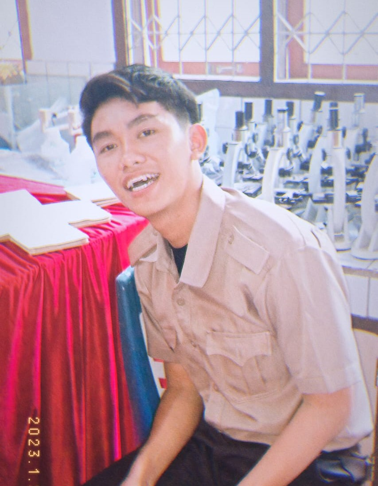

Selamat Datang.
Website personal sederhana.
Perkenalkan nama saya Jonathan Sitanggang mahasiswa dari program studi Teknik Informatika Universitas Sam Ratulangi. Saya memiliki hobi seperti bermain olahraga, bermain musik. Didalam website ini berisi foto-foto, informasi, dan juga kontak dari saya sendiri